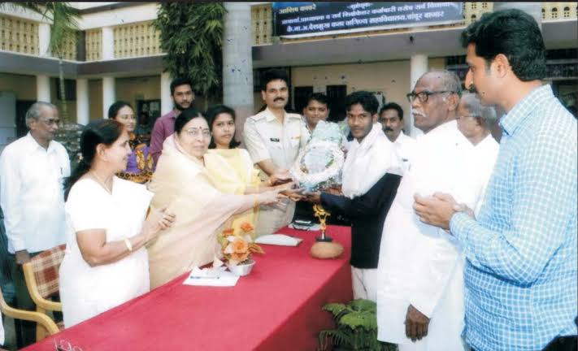
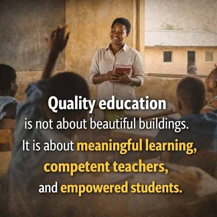
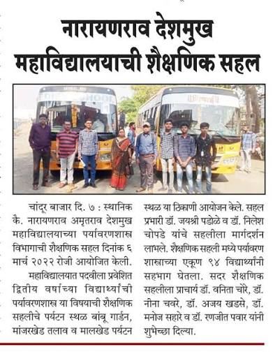
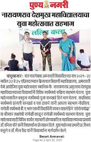
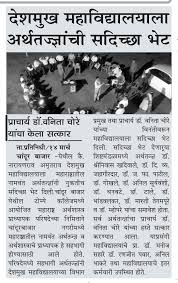
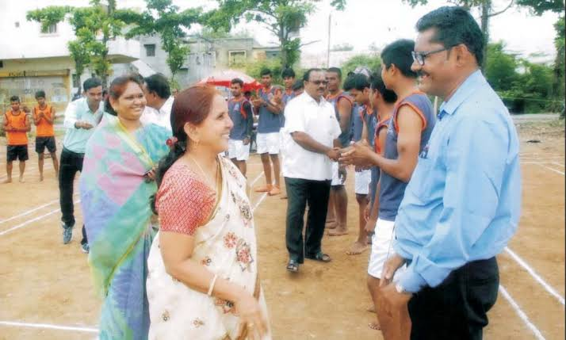
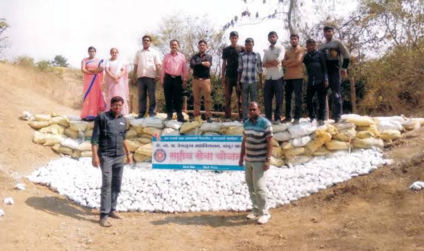

Welcome to Our College
Narayanrao Amrutrao Deshmukh Arts And Commerce College, Chandur Bazar is committed to providing quality education and creating a positive learning environment for students.
Our college focuses on academic excellence, personality development and preparing students for a successful future.
Quality Education
We believe that education is the foundation of a successful life. Our college provides students with opportunities to improve their knowledge, skills and confidence.
We encourage students to participate in academic, cultural and extracurricular activities.


Educational Tour & Environmental Awareness
The Department of Environmental Studies of Narayanrao Amrutrao Deshmukh College, Chandur Bazar, organized an educational tour for students. The tour provided students with an opportunity to learn beyond the classroom and gain practical knowledge through direct observation and experience. During the visit, students explored environmental aspects and gained valuable insights through guidance and interaction. Such educational activities help students understand environmental responsibility and connect their academic learning with real-life experiences.
We aim to create an environment where every student gets an opportunity to discover their potential.
Youth Festival & Student Achievements
Students of Narayanrao Amrutrao Deshmukh College actively participated in the Youth Festival organized by Sant Gadge Baba Amravati University.
The event provided students with an opportunity to showcase their talent, creativity and confidence on a larger platform.
Such cultural and educational activities help students develop communication, presentation, teamwork and overall personality skills.


Interaction with Eminent Personalities
Narayanrao Amrutrao Deshmukh Arts And Commerce College, Chandur Bazar has welcomed distinguished personalities and experts who have shared their valuable guidance and experiences with the college community.
Such interactions provide students and faculty members with an opportunity to gain new perspectives and learn from the experiences of accomplished individuals.
The college believes that meaningful interactions with experts contribute to academic growth and encourage students to think beyond the classroom.
Supporting Student Success
We provide students with guidance and support throughout their academic journey.
Our aim is to help students overcome challenges and achieve their educational and career goals.

Sports and Physical Activities
The college encourages students to take part in sports and physical activities as an important part of their overall development.
Sports activities provide students with opportunities to develop discipline, teamwork, confidence and a healthy competitive spirit.
The college promotes active participation in sports and provides students with opportunities to showcase their abilities beyond academic studies.
Community Service & Social Responsibility
The college encourages students to actively participate in social service activities through the National Service Scheme (NSS).
Such activities provide students with practical opportunities to understand their responsibilities towards society and the environment.
Through teamwork and community-oriented initiatives, students develop leadership, discipline, cooperation and a strong sense of social responsibility.
